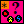

config/spheres/sphere_*.json
Defines all sphere types in the game.
Each sphere is stored in a separate file, located in config/spheres/sphere_*.json, where the asterisk is your sphere ID.
To add a new sphere, simply create a new file in the aforementioned folder, making sure that you name it correctly and the ID is unique.
A sphere ID must be an integer number. The numbers do not have to be continuous. Make sure you follow the following guidelines:
- ID = 0 is reserved by the sphere pusher (e.g. a scarab).
- Negative IDs should be used for powerup balls (i.e. a fireball, dagger, color cloud, etc.).
- Positive IDs should be used for ordinary balls which spawn in the game.
 The root entry.
The root entry. sprite: A sprite to be drawn when the sphere is on the screen.
sprite: A sprite to be drawn when the sphere is on the screen.- shadowSprite: A shadow sprite to be drawn along the sphere. Defaults to sprites/game/ball_shadow.json if not defined.
 spriteAnimationSpeed: When defined, the sphere sprite will animate with that speed in frames per second. This disables rolling animation and rotation. When left out, the sphere will have their usual rolling animation and will keep rotating.
spriteAnimationSpeed: When defined, the sphere sprite will animate with that speed in frames per second. This disables rolling animation and rotation. When left out, the sphere will have their usual rolling animation and will keep rotating.- nextSprite: A sprite used to draw the shooter's next color indicator.
- nextSpriteAnimationSpeed: When defined, the next sphere sprite will animate with that speed in frames per second.
 idleParticle: A persistent particle packet used when the sphere is on the board.
idleParticle: A persistent particle packet used when the sphere is on the board.- destroyParticle: A one-time particle packet used when the sphere is destroyed.
- destroyCollectible: A collectible generator used when the sphere is destroyed.

 color: The color or color palette used by shooting retical.
color: The color or color palette used by shooting retical.- colorSpeed: Must be present only if color is a color palette pointer. Defines how fast (in pixels per second) will the palette be animated.
 interchangeable: Whether this sphere can be changed when in the first slot of the shooter.
interchangeable: Whether this sphere can be changed when in the first slot of the shooter.- shootBehavior: Defines how this sphere should behave when it's shot. More info below.
 shootEffects: A list of collectible effects to be applied when this sphere is shot.
shootEffects: A list of collectible effects to be applied when this sphere is shot.- shootSpeed: If specified, overrides the speed of this sphere when shot.
 shootSound: A sound event launched when this sphere is shot.
shootSound: A sound event launched when this sphere is shot.- hitBehavior: Defines how this sphere should behave when it hits a sphere train. More info below.
- hitSound: A sound event launched when this sphere hits a sphere train.
- hitSoundBad: An optional sound event launched when this sphere hits a sphere train and doesn't match any neighboring spheres.
- matches: A list of sphere type IDs (integers) this sphere type matches with.
 matchFont: A font used to display a floating text when this sphere gives points.
matchFont: A font used to display a floating text when this sphere gives points.
Possible shoot behaviors
Debug information: this can be checked in Shooter:shoot().
normal
The sphere gets launched and flies upwards with a speed defined by the shooter and whether the speed shot is active.
- shootBehavior:
 type: normal
type: normal
lightning
The sphere does not get launched and instead is destroyed immediately, destroying nearby matching spheres in a straight vertical line.
- shootBehavior:
- type: lightning
- range: How close the spheres must be from the center in order to be destroyed, in pixels.
Possible hit behaviors
Debug information: this can be checked in ShotSphere:moveStep().
normal
The sphere gets appended to the sphere train where it landed.
- hitBehavior:
- type: normal
destroySphere
If the sphere hits a matching sphere, both spheres get destroyed. Else, nothing happens and the sphere flies on until another sphere is hit.
- hitBehavior:
- type: destroySphere
fireball
The sphere gets destroyed and destroys the matching spheres around.
- hitBehavior:
- type: fireball
- range: How close the spheres must be from the center in order to be destroyed, in pixels.
colorCloud
The sphere gets destroyed and changes the color of the matching spheres around.
- hitBehavior:
- type: colorCloud
- range: How close the spheres must be from the center in order to have their color changed, in pixels.
- color: Which color the spheres will be changed to.
replaceColor
The sphere gets destroyed and changes all spheres of a hit sphere's color to the specified color.
- hitBehavior:
- type: replaceColor
- particle: A one-time particle packet launched for all affected spheres.
- color: Which color the spheres will be changed to.